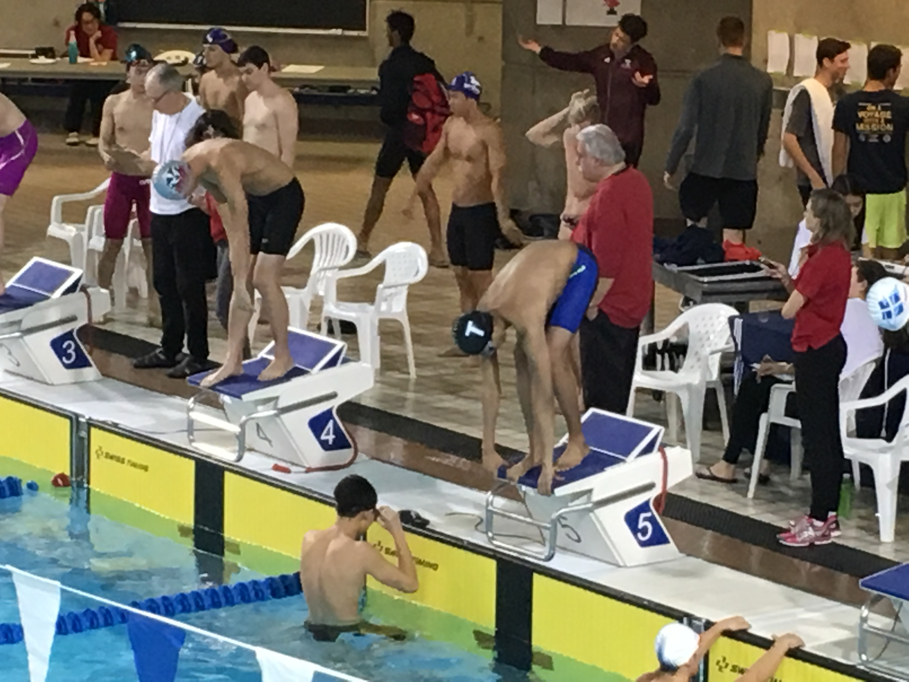
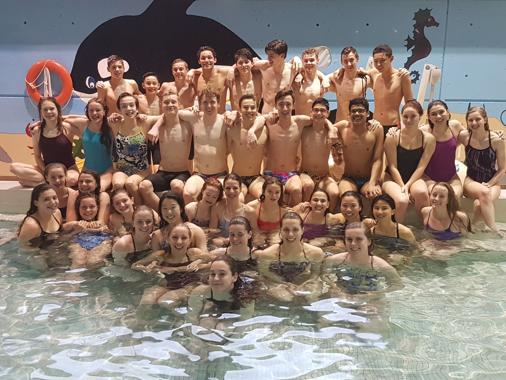

Competitive Swimming
Breastroke and more...

Sports had not always been my family’s coat-of-arms. But fortunately for me, my parents were part of the new age Indian thinking that advocated sports as an essential ingredient of a fully rounded upbringing and there I was coerced into taking up swimming at a tender age of 6. It wasn’t love at first sight – the early days were daunting. Overcoming the fear of water, committing to a routine, sacrificing tiny pleasures like screen time. 2012 was the turning point. Convinced that I was ready for competitive swimming my coach promoted me to the elite swimmers group which meant longer and harder practices – swimming 5 hours a day, 6 days a week coupled with gruelling strength training. I learnt the art of striking a balance and focus between my training and academics. This is the period I came into myself. Swimming became my passion and winning my goal. I was competing every other week and rapidly moved up from club to district to finally the state swimming championships. I had my eyes now set on making the cut for the Indian nationals .
I missed out on a spot on the team by just a whisker – three years in a row. I could not fathom what was worse – that I failed to qualify repeatedly or the time and sacrifices that my family and I had made were in vain. After moving to Toronto, I continued to swim under the Toronto Swim Club. With harder practices and new teammates, I bettered my personal bests. I can confidently say that swimming has shaped me into the person I am today, teaching me the importance of hard work and time management. And how to recuperate from failure yet keep going. Swimming was more than just an outlet to stay fit, it taught me how to make life-long relationships and stay mentally healthy. Swimming continues to be an integral part of my life and hope to pursue the same in University.